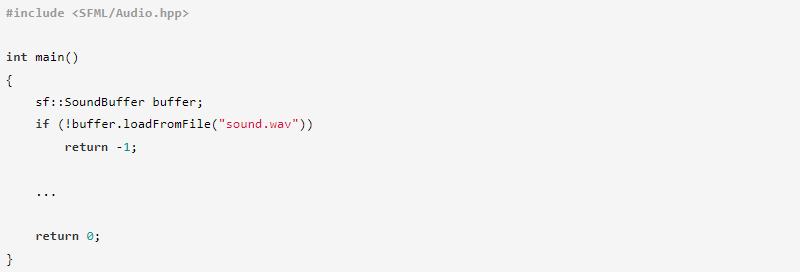
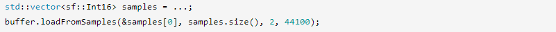
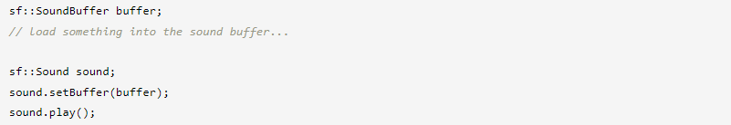
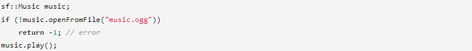
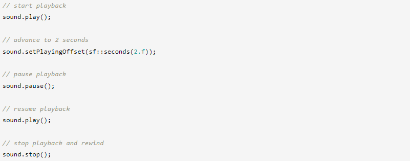
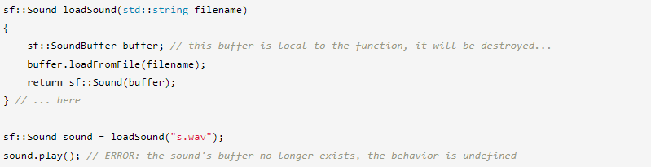
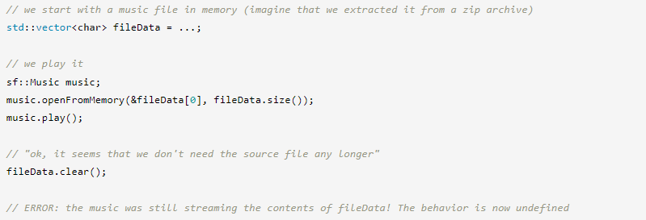
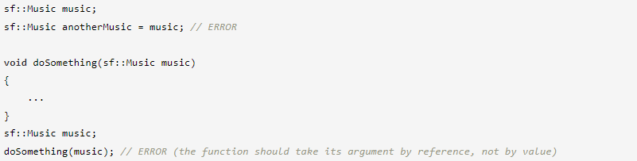

⇐Управление 2D-камерой с видами
Воспроизведение звуков и музыки
Звук или музыка?
SFML предоставляет два класса для воспроизведения аудио: sf::Sound и sf::Music. Они оба предоставляют более или менее одинаковые функции, главное отличие заключается в том, как они работают.
sf::Sound — это легкий объект, который воспроизводит загруженные аудиоданные из sf::SoundBuffer. Его следует использовать для небольших звуков, которые могут поместиться в памяти и не должны отставать при воспроизведении. Примерами являются выстрелы из оружия, шаги и т. д.
sf::Music не загружает все аудиоданные в память, а передает их на лету из исходного файла. Обычно он используется для воспроизведения сжатой музыки, которая длится несколько минут, и в противном случае потребовалось бы много секунд для загрузки и использования сотен МБ памяти.
Загрузка и воспроизведение звука
Как упоминалось выше, звуковые данные хранятся не непосредственно в sf::Sound, а в отдельном классе с именем sf::SoundBuffer. Этот класс инкапсулирует аудиоданные, которые в основном представляют собой массив 16-битных целых чисел со знаком (называемых «аудиосэмплами»). Сэмпл — это амплитуда звукового сигнала в данный момент времени, поэтому массив сэмплов представляет собой полный звук.
На самом деле классы sf::Sound/sf::SoundBuffer работают так же, как sf::Sprite/sf::Texture из графического модуля. Итак, если вы понимаете, как спрайты и текстуры работают вместе, вы можете применить ту же концепцию к звукам и звуковым буферам.
Вы можете загрузить звуковой буфер из файла на диске с помощью его функции loadFromFile:
Как и во всем остальном, вы также можете загрузить аудиофайл из памяти (loadFromMemory) или из пользовательского входного потока (loadFromStream).
SFML поддерживает форматы аудиофайлов WAV, OGG/Vorbis и FLAC. Из-за проблем с лицензией MP3 не поддерживается.
Вы также можете загрузить звуковой буфер непосредственно из массива семплов, если они происходят из другого источника:
Поскольку loadFromSamples загружает необработанный массив сэмплов, а не аудиофайл, для полного описания звука требуются дополнительные аргументы. Первый (третий аргумент) — количество каналов; 1 канал определяет монофонический звук, 2 канала определяют стереофонический звук и т. д. Второй дополнительный атрибут (четвертый аргумент) — частота дискретизации; он определяет, сколько сэмплов должно воспроизводиться в секунду, чтобы восстановить исходный звук.
Теперь, когда аудиоданные загружены, мы можем воспроизвести их с помощью экземпляра sf::Sound.
Круто то, что вы можете назначить один и тот же звуковой буфер нескольким звукам, если хотите. Вы даже можете играть в них вместе без каких-либо проблем.
Звуки (и музыка) воспроизводятся в отдельном потоке. Это означает, что вы можете делать все, что хотите, после вызова play() (кроме уничтожения звука или его данных, конечно), звук будет продолжать воспроизводиться до тех пор, пока не закончится или явно не остановится.
Воспроизведение музыки
В отличие от sf::Sound, sf::Music не загружает аудиоданные заранее, а передает их прямо из источника. Таким образом, инициализация музыки более прямая:
Важно отметить, что, в отличие от всех других ресурсов SFML, функция загрузки называется openFromFile, а не loadFromFile. Это потому, что музыка на самом деле не загружается, эта функция просто открывает ее. Данные загружаются только позже, когда играет музыка. Также полезно помнить, что аудиофайл должен оставаться доступным, пока он воспроизводится.
Другие функции загрузки sf::Music следуют тому же соглашению: openFromMemory, openFromStream.
Что дальше?
Теперь, когда вы можете загружать и воспроизводить звук или музыку, давайте посмотрим, что вы можете с этим сделать.
Для управления воспроизведением доступны следующие функции:
- play начинает или возобновляет воспроизведение
- pause приостанавливает воспроизведение
- stop останавливает воспроизведение и перематывает
- setPlayingOffset изменяет текущую позицию воспроизведения
Пример:
Функция getStatus возвращает текущий статус звука или музыки, вы можете использовать ее, чтобы узнать, остановлен ли он, воспроизводится или поставлен на паузу.
Воспроизведение звука и музыки также контролируется несколькими атрибутами, которые можно изменить в любой момент.
Высота тона — это фактор, который изменяет воспринимаемую частоту звука: больше 1 воспроизводит звук с более высоким тоном, меньше 1 воспроизводит звук с более низким тоном, а 1 оставляет звук без изменений. Изменение высоты тона имеет побочный эффект: оно влияет на скорость игры.
Громкость... громкость. Значение варьируется от 0 (отключение звука) до 100 (полная громкость). Значение по умолчанию — 100, что означает, что вы не можете сделать звук громче, чем его начальная громкость.

Атрибут цикла определяет, будет ли звук/музыка автоматически зацикливаться или нет. Если он зациклится, он возобновит воспроизведение с самого начала, когда закончится, снова и снова, пока вы явно не вызовете остановку. Если не задан цикл, он автоматически остановится после завершения.
Доступны и другие атрибуты, но они связаны с пространственной и объясняются в соответствующем руководстве.
Распространенные ошибки
Разрушенный звуковой буфер
Наиболее распространенная ошибка заключается в том, что звуковой буфер выходит за пределы области видимости (и, следовательно, уничтожается), в то время как звук все еще использует его.
Помните, что звук хранит только указатель на звуковой буфер, который вы ему даете, он не содержит собственной копии. Вы должны правильно управлять временем жизни ваших звуковых буферов, чтобы они оставались живыми, пока они используются звуками.
Слишком много звуков
Еще один источник ошибок — это когда вы пытаетесь создать огромное количество звуков. SFML имеет внутреннее ограничение; оно может варьироваться в зависимости от ОС, но никогда не должно превышать 256. Это ограничение представляет собой количество экземпляров sf::Sound и sf::Music, которые могут существовать одновременно. Хороший способ не превысить лимит — уничтожить (или переработать) неиспользуемые звуки, когда они больше не нужны. Это применимо только в том случае, если вам нужно управлять действительно большим количеством звуков и музыки, конечно.
Уничтожение источника музыки во время ее воспроизведения
Помните, что музыке нужен источник, пока она играет. Музыкальный файл на вашем диске, вероятно, не будет удален или перемещен во время его воспроизведения вашим приложением, однако все становится сложнее, когда вы воспроизводите музыку из файла в памяти или из пользовательского входного потока:
sf::Music нельзя скопировать
Последняя «ошибка» — это напоминание: класс sf::Music нельзя копировать, поэтому вам не разрешат это сделать:
